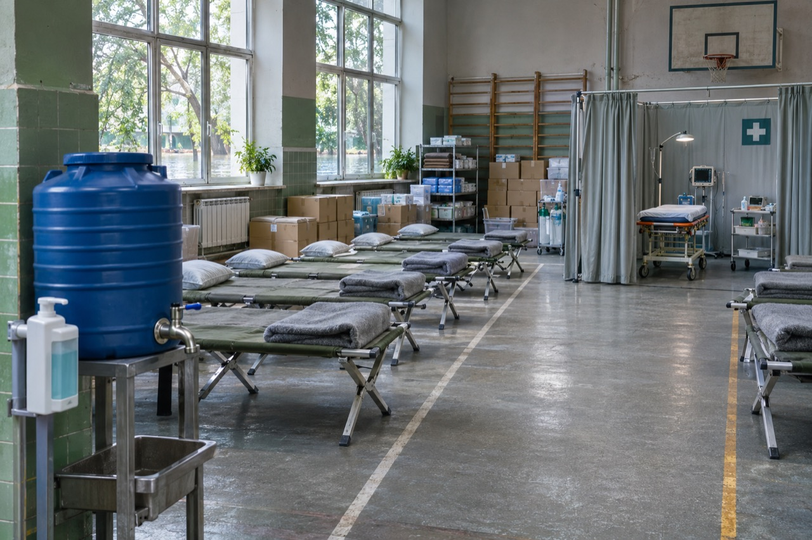

ВІЙСЬКОВО-МЕДИЧНА ПІДГОТОВКАВідпрацьовуй
Відпрацьовуй
медичні навички.
Обери заняття. Розбери ситуацію, виконай дії та перевір результат.
Твої заняття
Практика у власному темпі
ЗАНЯТТЯ 106 ІНТЕРАКТИВНИХ НАВИЧОК
Організація санітарно-гігієнічних і протиепідемічних заходів у надзвичайних ситуаціях. Екстрена медична допомога при масових ураженнях у мирний та воєнний час.
Санітарна безпека, інфекційний контроль, допомога при масових ураженнях.
Відкрити практику →ЗАНЯТТЯ 05
6 ІНТЕРАКТИВНИХ НАВИЧОК
Завдання та зміст військово-польової терапії. Бойовий стрес, посттравматичний стресовий розлад. Медико-тактична характеристика ядерної зброї. Радіаційні ураження.
Військово-польова терапія, бойовий стрес, радіаційна безпека та дозиметрія.
Відкрити практику → ЗАНЯТТЯ 06
ЗАНЯТТЯ 06МАТЕРІАЛИ ЗАНЯТТЯ
Особливості хімічної зброї. Медико-тактична характеристика осередку хімічного зараження. Ураження бойовими отруйними речовинами. Техніка безпеки.
Деконтамінація, допомога при хімічних ураженнях та сортування START.
Відкрити заняття →